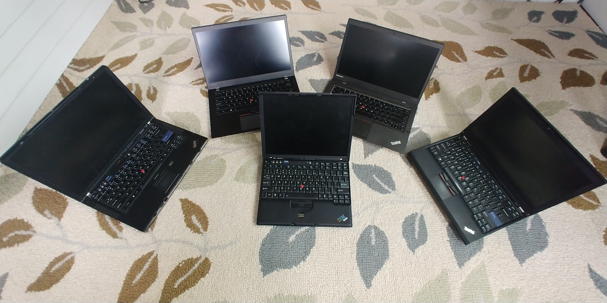
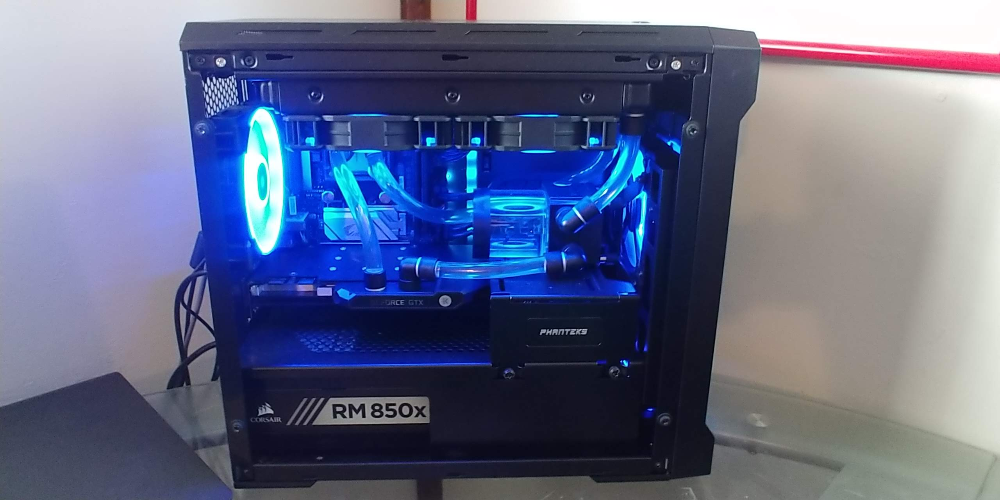
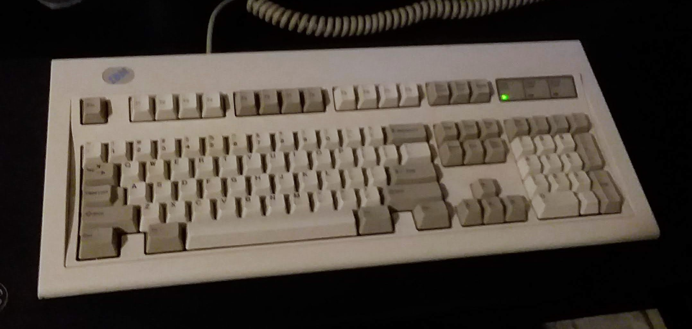
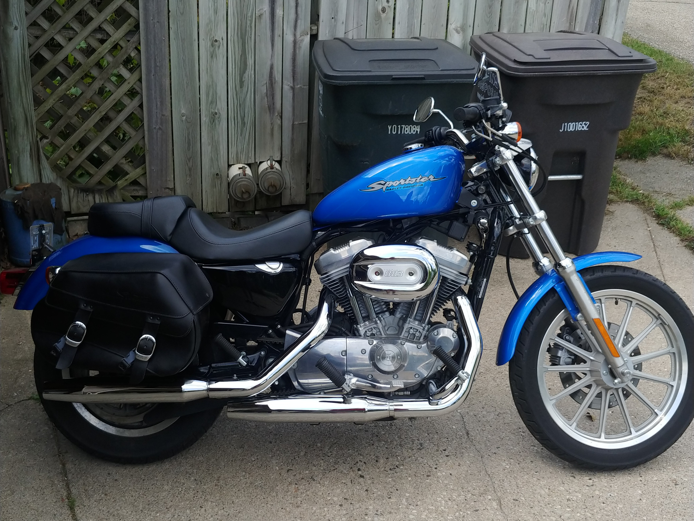
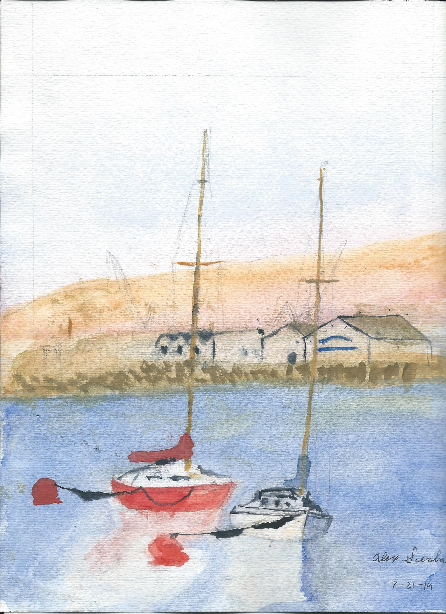

I have several hobbies that I enjoy, and these are my main ones.
Photography
Just recently, at the end of 2021, have I gained an interest in photography and cameras. Walking around looking for interesting things to photograph and visiting scenic locations seems like a nice way to go and enjoy the outdoors. It also gives my something to post about on the blog as well as images to use for the site.
Computers
I got into computers as a hobby in middle school, and it was one of the drivers for my decision to go into computer science originally. I've since moved to transportation design, but the hands-on nature of tinkering with computer hardware is something I still find very satisfying, if not a bit frustrating at times. I remember when I attended, and later worked at, local Yerkes Observatory summer camps solving problems with computers and learning about their use in astronomy. The work of the professors and volunteers there was inspiring, and growing up in that environment was definitely the reason that I am as in to technology as I am today.
The only laptop that I've ever bought new was an HP Stream 11 when it first came out. While it kept me entertained and helped foster my enjoyment for computers, the first used laptop I purchased was a ThinkPad Z61t. I had heard about ThinkPads from some YouTube video about the best cheap laptops. The first of the Thinkpads with a widescreen aspect ratio, it was one of the most unusable and dumb purchases that I have made in the realm of computers (and I've made some questionable financial choices in the space). The entire reason I bought it was for playing Minecraft (yeah. It was back then...) and the graphics card was too old to support it. On top of that, it was already pretty worn and missing some screws, so it slowly began to fall apart over the year I tried to use it. The battery wouldn't make good contact 100% of the time either, so many random shutdowns would occur on battery power. I didn't even get a bargain for it, and I learned my lesson about buying used low-end computers.
My next purchase was a ThinkPad X1 Carbon from 2014. My friend's dad had one at the time for work, and the unconventional trackpad and touchbar had me hooked. Most people don't like the "clunkpad", but as a trackpad only user at the time it solved some of the issues Apple was trying to solve with the 2015 MacBook trackpad, such as the ability to click anywhere on the trackpad, and I liked it. The touchbar was just a novelty I could use to make fun of people I knew with MackBook Pros that had touchbars. The keyboard with the Home and End keys where the CapsLock used to be was another thing that people disliked, but I thought that it was handy as I rarely used Caps but often needed Home and End. That X1 Carbon was probably one of my favorite laptop purchases to date. It was thin, relatively light, and had a "just right" 14" 900p screen. The keyboard was just what I needed it to be and the trackpad was good by my standards. This made it all the more sad when it started to blue screen often and lock up in a spectacular show of graphical artifacts (picture). After a run of MemTest, was determined to be failing memory (which was soldered on. CURSE YOU LENOVO AND THE INDUSTRY!!!). I was so heartbroken that I purchased another one for the motherboord. I chugged along with that for another few months, but the same thing happened again. After some looking around, it seemed like it was a fairly common problem with no cheap solution, so I started using my X220 for a while.
After my exposure to the X1 Carbon, I was hooked on ThinkPads. Their durability, minimalistic design, and association with NASA (I know, I know. The IBM models were used in space, but still) were driving factors. Older ones were cheap enough, so I looked around for a good model to buy. The internet said the X220, so I bought an X220. When it arrived, I learned three things: Pre 30 series keyboards were amazing, the trackpoint is probably the best ways to navigate in about 80% of situations (for me), and why the heck did we stop with hot swappable batteries? Mine came from the previous owner with the standard, extended, and slice batteries, and I used them to their fullest. Need the lightest possible config but not too much battery? Use the standard. Need stock slimness, but decent battery? Use the extended. Need the slimness but great battery? Bring the standard and extended. Need to survive the atomic winter with no external power and are cool with a brick? Use the slice and the extended. Okay, realistically the battery with the slice and the extended was only barely on par with modern ultrabooks at the time, but considering the laptops that were around when it was new, it was pretty insane. This was probably one of the more reasonable purchases I've made, and served me through most of high school once the X1 died. Eventually though, I needed something that could actually run modern programs without a long wait. That was the X1, but it died. so I needed something new. While on a trip across the country, I found it.
My current laptop, a ThinkPad T460s, was found at the Unclaimed Baggage Center in Scottsboro, AL along with a Dell XPS 13 9350. It's really an awesome place for cheap computers. I debated between the two, but ultimately kept the T460s because of its 20GB of memory over the Dell's 8GB. I was starting to get into VMs, so 8GB wasn't going to cut it. I ended up selling the Dell to a friend. So far my T460s has been great. Only slightly thicker than the X1, it has the same footprint, a good keyboard with more travel, and a modern Skylake CPU (hey Intel, how long did 14nm run?). The dual-core is showing it's age a bit with VMs, but other than that it's been good to me. The battery is in need of a replacement, as I can only get about two and a half hours away from the wall now, but they're cheap enough. I'm currently running MacOS Big Sur on it using OpenCore. There was a guide online that made it super easy. Intel Wi-Fi even works (that's a big accomplishment for the Hackintosh community), but the driver is a bit strange at best and absolutely non-functional at it's worst. No bluetooth either, though I haven't dived into seeing why as it should work by all accounts. Overall, I like its utility. I'm thinking about a T480 soon, though, as it's the last of the ThinkPads with a removable battery and has a quad-core processor which will help when running VMs.
I also got a ThinkPad X60 from a friend to mess with. That's been fun to play with OpenBSD on it. I got i3wm installed and working, and Wi-Fi is so stupid simple that it blew my mind. It's not too useful for stuff other than maybe a retro game (I'm not really in to that) or text editing (locally).

Pictured left to right: Z61t, T460s, X1 Carbon (2nd Gen), X220. Center: X60
Besides school computers, my first experience with a desktop computer at home was the one I assembled. I remember how excited I was to get all the parts and follow a build guide to get it put together. When I was done, I was so proud. I still sometimes get that feeling after wrestling with my water cooling setup or finally getting my clunky computer I found in the scrap pile to boot. It was a pretty bad computer by even the standards of the time. It had an AMD FX 6300 processor, 8GB of DDR3 memory, an AMD RX 460 from one of the cheapest brands possible, a 1TB hard drive (yeah, a hard drive), and a bargain bin power supply. Since then, it's gone through a few different iterations to get to where it is now, a product of the Ryzen hype and longings of middle school me.
The specs of my current desktop are shown bellow, but I went with Ryzen 3000 after selling my Ryzen 5 1600 in hopes that the better IPC would make a better pairing for my new graphics card in games. Since it came out and I saw YouTubers like JayzTwoCents creating amazing water cooled builds with NVIDIA's last iteration of the Titan Xp, I knew I wanted one and that it needed to be watercooled. Something about the name "Titan" really stuck with me. Plus, it was something I could only dream of owning when I first started out and since the prices on the used market were reasonable by the time I purchased it, I figured what the heck. So far the whole rig has served me well, and I still have plans to mess with it.

My main desktop computer (Ryzen 5 3600, 16GB 2666MHz, GTX Titan Xp "2017", 512GB NVMe SSD, 1TB 7200 RPM HDD, 2TB 5400 RPM HDD)
While new parts are cool, collecting old computers and their components are another source of enjoyment. The stories of where they were found, what they did, and who might have used them are always interesting, and the stuff that gets put on a shelf almost always is a conversation starter. Besides that, repurposing old equipment is something I feel strongly about. E-waste is a real problem, and if I can get by with garbage that I found for free, it keeps one more piece of electronics out of the landfill while keeping me entertained for a weekend.
During the closing process of Yerkes observatory in late 2018, I was fortunate enough to be there while some stuff was being throw away. I came away with some old cases and cables, but the real score was the IBM Model M from 1994 with buckling springs. I had recently been thinking about purchasing one but didn't because I didn't really need another keyboard. Low and behold, it was sitting there in the trash pile. Dirty as ever, I excitedly grabbed it and proceeded to tell anyone I knew about what I had discovered. The looks on their faces were comical as they were puzzled by why this kid was so excited by some old keyboard. After a good cleaning, it's been used in my rotation of main keyboards, and it's always fun to tell people about it when they ask why I have a "crappy old keyboard."

My 1994 IBM Model M found at Yerkes Observatory
Motorcycling
Motorcycle riding is one of those things that almost instantly starts a conversation. Good or bad. A lot of the times you get the "Nice, what kind?" or the "Wow, that's so cool!", but occasionally you'll get the "WHAT?? YOU'RE GOING TO KILL YOURSELF!" (all caps are not a misrepresentation). To those people, I feel sorry. Life is short, and while motorcycling is more dangerous than driving, the experience is one that is well worth the risk.
The main selling point for open-air cars, convertibles, is the greater connection to the environment. Motorcycles turn that up to 11. You can see the road whizzing by your feet, inches away. You can touch it if you want to. The manual gearbox in most motorcycles requires attention unlike automatics found in many cars. You become the one in control rather than a passenger. Turns require finesse and you move you body with the turn unlike a car where you just sit and turn a wheel. The motorcycle becomes an extension of your every movement rather than just a place to sit. The people you meet are an experience on their own. Forget the Harley rider stereotype. Plenty of riders aren't like that, and there's an amazing community out there. If you haven't, I'd suggest going on a ride with someone. Maybe it's not for you, but maybe you find that it's one of the best experiences you've had (probably don't start on a sport bike, though, as the passenger seating isn't the most comfortable).
My family has a small collection of two-wheeled vehicles (two of which I own), and I've grown up around mopeds and dirt bikes for a large portion of my childhood. My motorcycle is a 2004 Harley-Davidson Sportster 883 that I purchased from a friend for cheap. My other two-wheeled vehicle is a 2003 Honda Ruckus 50. It is currently in the process of a GY6 swap. I wasn't into Harleys for a long time, but the Sportster is different. Sure it's big and heavy when compared to a sport bike, but compared to its overweight cousins, it's downright tiny. The engine's power (although it doesn't have much) is more than you could ask for in most circumstances, and the "retro" look is a selling point for me. I am currently working on a Yamaha XS650 that I hope to be riding instead, as I like the idea of riding an old motorcycle that I rebuilt.

My Sportster 883 outside the garage.
Skiing
Skiing is one of the most fun winter activities for me. I can only stay inside for so long, and being active in the snow is a bit hard. Sliding down a hill and breathing in the fresh air, going over jumps, and sliding rails is where I have my fun. Trying new tricks is scary but satisfying once learned. Most people in the park are friendly enough to other park skiers, and nothing beats the energy of a group of people cheering you on to try that one trick you're trying to learn.
Art
Sketching
Sketching is a way to express your ideas. For me, I've mostly worked with drawing things that I want to make, but over the last year I've experimented with drawing pictures from references and getting more detailed. While a long ways away from professional level, I decided to go to art school for transportation design. It is a sketch heavy major, and I'm learning new things every day.
Sketch of my Arai motorcycle helmet.
Watercolor
Watercolor never really interested me, but many years ago I had an elderly neighbor who was a watercolor artist. He and his wife moved next door, and we moved into their old house. He had painted a picture of the house previously and gave it to us as a gift when we bought the house. I would go and help do yard work once in a while to help them out, and one day my mom got me to ask him if he would help me learn to paint. He agreed, and I sat down with him one day and learned some of the basics. Sadly, I only had that one day, and he moved away after his wife's passing not long after. Since then, I've wanted to get better at watercolor. I plan to work towards that goal over the summers between school.

Practice watercolor project from "The Complete Watercolor Set" by David Norman painted by me in 2014.